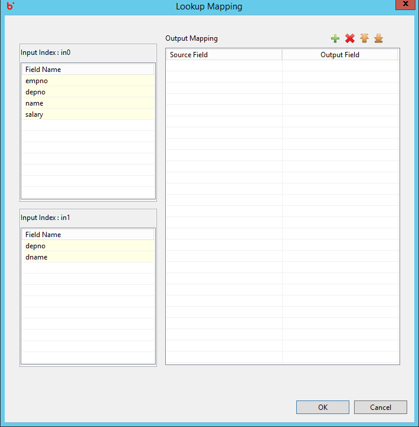
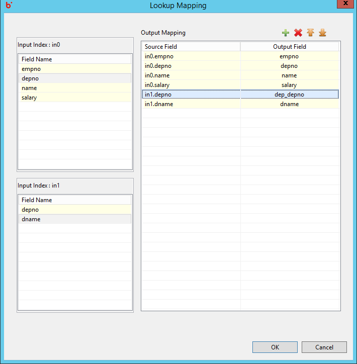
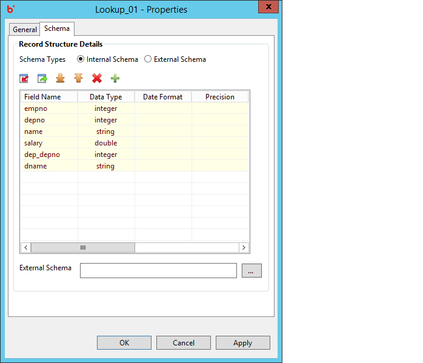

Hydrograph Help
Hydrograph Help
Lookup Mapping View
Hydrograph Release Version 1.0
Mapping view for the Lookup component can be viewed by clicking on the Edit button near the Lookup property on General tab. Input ports along with the input fields arriving from each port is visible at the extreme left of the grid. In the center users can view the Mapping grid containing empty columns for source fields and mapped fields. Copy of option is not available for the Lookup component.

User can drag and drop single or multiple fields in the mapping grid. Those fields that are passed as is in the output are Passthrough fields. Whereas, fields renamed in the output are Map fields or in simple sense aliases for the corresponding input field. In the below example, all fields except 'dep_depno' are passed as Passthrough fields. 'dep_depno' is passed as a Map field.

Output fields are visible in the schema grid along with their specified datatypes.
